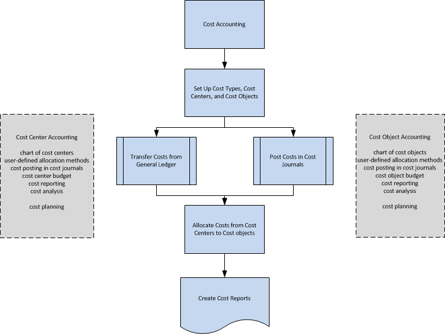

Informationen zur Kostenrechnung
Kostenrechnung wird verwendet, um Ihnen dabei zu helfen, die Kosten des Betriebs eines Geschäftes zu erkennen. Kostenrechnungsinformationen sollen Folgendes analysieren:
- Die Arten von Kosten, die in Ihrem Unternehmen anfallen
- Wo die Kosten anfallen
- Wer die Kosten trägt
In der Kostenrechnung weisen Sie aktuelle und geplante Kosten für Betrieb, Abteilungen, Produkte und Projekte zu, um die Profitabilität Ihres Unternehmens zu analysieren.
Workflow in der Kostenrechnung
Kostenrechnung hat folgende Hauptkomponenten:
- Kostenarten, Kostenstellen und Kostenträger
- Kostenposten und Kosten-Buch.-Blätter
- Kostenzuteilungen
- Kostenbudgets
- Kostenberichte
Das folgende Diagramm zeigt den Workflow der Kostenrechnung.

Kostenarten, Kostenstellen und Kostenträger
Sie definieren Kostenarten, Kostenstellen und Kostenträger, um zu analysieren, worin die Kosten bestehen, woher die Kosten stammen und wer die Kosten trägt.
Zunächst definieren Sie einen Kostenartenplan mit einer Struktur und Funktionalität, die dem Kontenplan des Hauptbuchs ähnelt. Sie können einen eigenen Kostenartenplan erstellen oder die Konten der Gewinn- und Verlustrechnung des Hauptbuchs übernehmen.
Kostenstellen sind Abteilungen und Gewinne, die für Kosten und Erträge verantwortlich sind. Häufig sind mehr Kostenstellen in der Kostenrechnung als in jeder Dimension eingerichtet, die im Sachkonto eingerichtet ist. Im Sachkonto werden in der Regel nur die Kostenstellen der ersten Ebene für direkte Kosten und die ursprünglichen Kosten verwendet. In der Kostenrechnung werden mehr Kostenstellen für zusätzliche Zuteilungsebenen erstellt.
Kostenobjekte sind Produkte, Produktgruppen oder Dienstleistungen, die eine Firma anbietet. Diese Objekte sind die „fertigen Waren“ einer Firma, die die Kosten tragen.
Sie können Kostenstellen mit Abteilungen und Kostenträger mit Projekten in Ihrem Unternehmen verknüpfen. Über das Hauptbuch können Sie Kostenstellen und Kostenobjekte mit beliebigen Dimensionen verknüpfen und diese Informationen durch Zwischensummen und Titel ergänzen.
Kostenposten und Kosten-Buch.-Blätter
Betriebskosten können aus dem Sachkonto übertragen werden. Sie können die Kostenposten aus dem Sachkonto automatisch auf Kostenposten bei jeder Buchung übertragen. Sie können auch einen Batchauftrag verwenden, um Hauptbucheinträge auf der Grundlage einer täglichen oder monatlichen Summenbuchung in Kosteneinträge zu übertragen.
In Kosten-Buch.-Blättern können Sie Kosten und Aktivitäten buchen, die weder aus dem Sachkonto stammen noch durch Verteilungen erzeugt werden. Beispielsweise können Sie reine Betriebskosten, Inlandsabgaben, Zuordnungen und Korrekturposten einzeln zwischen Kostenarten, Kostenstellen und Kostenträgern oder auf wiederkehrender Basis buchen.
Kostenzuteilungen
Zuteilungen verschieben Kosten und Einnahmen zwischen Kostenarten, Kostenstellen und Kostenträgern. Gemeinkosten werden zuerst auf den Kostenstellen gebucht und zu einem späteren Zeitpunkt auf Kostenträger berechnet. Ein Beispiel wäre eine Verkaufsabteilung, die mehrere Produkte gleichzeitig verkauft. Die Gemeinkosten der Abteilung, wie Gehälter, Verbrauchsmaterial und Reisekosten, werden zunächst der Verkaufskostenstelle zugeordnet. Die Kosten werden dann auf die verschiedenen verkauften Produkte (Kostenträger) sowie auf die eingekauften Materialien (direkte Kosten) aufgeteilt.
Die Verrechnungsbasis und die Genauigkeit der Verrechnungsdefinition beeinflussen die Ergebnisse der Kalkulationen. Die Zuteilungsdefinition wird verwendet, um Kosten zuerst von so genannten Vor-Kostenstellen zu den Hauptkostenstellen und dann von Kostenstellen zu Kostenträgern zuzuordnen.
Jede Zuordnung besteht aus einer Zuordnungsquelle und einer oder mehreren Zuordnungszielen. Mit der Methode der statischen Verteilung können Sie Istwerte oder Budgetwerte auf Basis eines bestimmten Wertes verteilen. Beispielsweise die Quadratmeterzahl oder ein festgelegtes Aufteilungsverhältnis von 5:2:4. Sie können auch tatsächliche Werte oder geplante Werte zuordnen, indem Sie die Methode der dynamischen Verteilung mit neun vordefinierten Zuteilungsgrundlagen und 12 dynamischen Datenbereichen verwenden.
Kostenbudgets
Ähnlich wie bei der Budgetierung im Hauptbuch können Sie Budgets erstellen, um Kosten für einen bestimmten Zeitraum (z.B. ein Geschäftsjahr) zu planen, die auf eine Kostenstelle (Unternehmensabteilung) oder einen Kostenträger (Produkt oder Dienstleistung) angewendet werden können. Sie können so viele Kalkulationen erstellen, wie Sie benötigen. Sie können dann die Kalkulation in das Budget des Hauptbuchs kopieren und umgekehrt. Und Sie können kalkulierte Kosten als Ist-Kosten übernehmen.
Kostenberichte
Die meisten Berichte und Statistiken basieren auf den gebuchten Kostenposten. Sie können die Sortierung der Ergebnisse einrichten und Filter verwenden, um zu definieren, welche Daten angezeigt werden müssen. Sie können Berichte für eine Kostenaufteilungsanalyse erstellen. Darüber hinaus können Sie mit den Standard-Finanzberichten festlegen, wie Ihre Berichte für den Kostenartenplan angezeigt werden.
Siehe auch
Kostenrechnung
Finanzen
Terminologie der Kostenrechnung
Arbeiten mit Business Central
Kostenlose E-Learning-Module für Business Central finden Sie hier